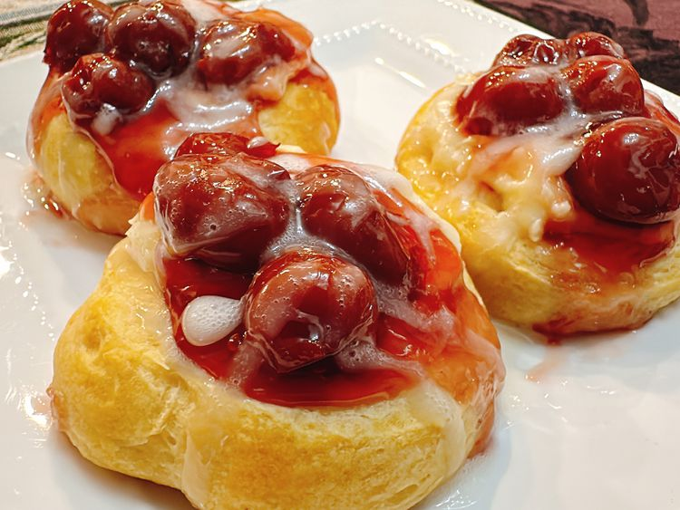

Shortcut Cherry Danish

This shortcut cherry Danish is simple to make with refrigerated crescent
dough sheets. Filled with a dollop each of sweetened, whipped cream cheese
and cherry pie filling, and glazed after baking, they're delicious without
being time-consuming.
Ingredients
- 1 (8 ounce) tube crescent dough sheet
- 4 ounces reduced-fat cream cheese
- 1/4 cup white sugar
- 1 1/2 teaspoons vanilla extract, divided
- 1/2 cup cherry pie filling
- 1/2 cup confectioners sugar
- 3 tablespoons milk, or as needed
Home